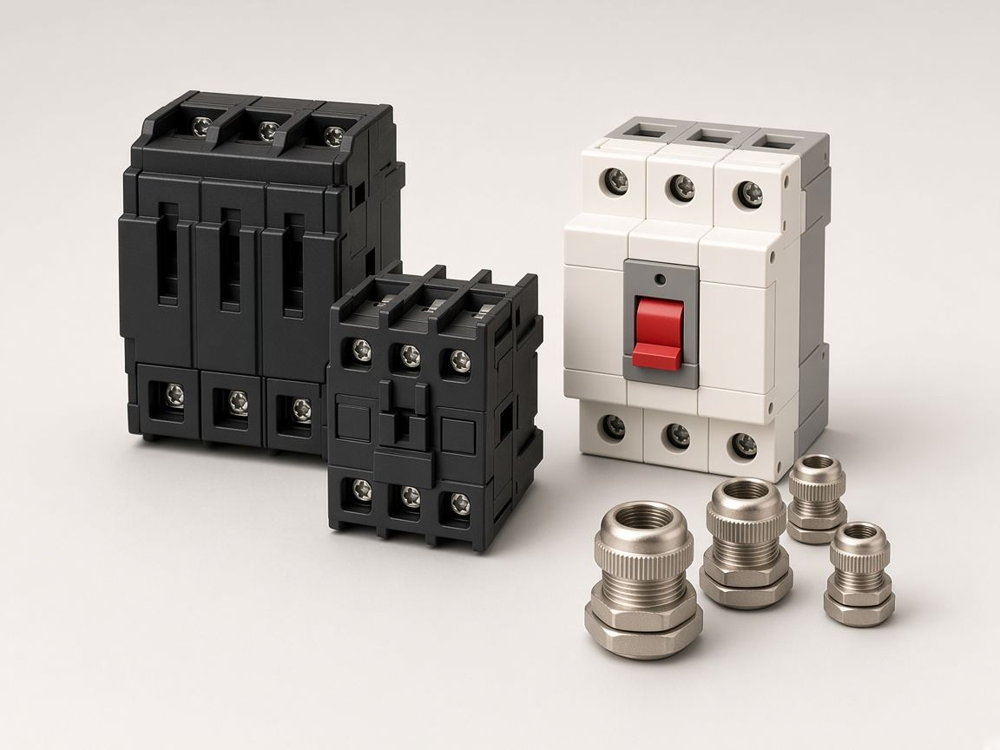

Поставка из Китая в Россию
Электрооборудование из Китая для промышленных покупателей
Низковольтная аппаратура для шкафов, распределения, защиты и MRO: автоматы, контакторы, реле, счетчики, трансформаторы тока и аксессуары.
Силовые повышающие и распределительные трансформаторы, включая главный трансформатор солнечной станции, описаны на странице силовых трансформаторов. Здесь их не подбираем.

Ассортимент
Промышленное электрооборудование
Работаем с техническими заявками, спецификациями, фото шильдиков и списками MRO-запчастей. Подбор аналогов выполняется только после согласования параметров.
Основные позиции
- Автоматические выключатели, устройства защиты и коммутационная аппаратура
- Контакторы, реле, таймеры, счетчики, трансформаторы тока и измерительные приборы
- Клеммы, шины, кабельные аксессуары и детали для распределительных шкафов
- Запасные электрические компоненты для ремонта и планового обслуживания
Как проходит поставка
- Проверяем техническое описание, количество и город доставки
- Уточняем наличие, срок производства или поставки
- Готовим коммерческое предложение и варианты доставки
- Согласуем упаковку, документы и отправку в Россию
Поисковые категории
Типовые запросы по направлению
Нужно КП по этой категории?
Отправьте модель, параметры или список позиций. Мы ответим по наличию, цене, срокам и доставке.
FAQ
Вопросы по поставке
Какие параметры нужны для запроса электрооборудования?
Укажите модель или тип, ток, напряжение, количество полюсов, количество, город доставки и требуемый срок поставки.
Можно ли объединить электрооборудование с автоматикой?
Да. Мы объединяем электрические компоненты, датчики, ПЛК, приводы и шкафные аксессуары в одну поставку.
Можно ли здесь заказать силовой трансформатор солнечной станции?
Нет. На этой странице низковольтная аппаратура и трансформаторы тока. Повышающий или распределительный трансформатор запрашивайте на странице силовых трансформаторов.
Другие направления